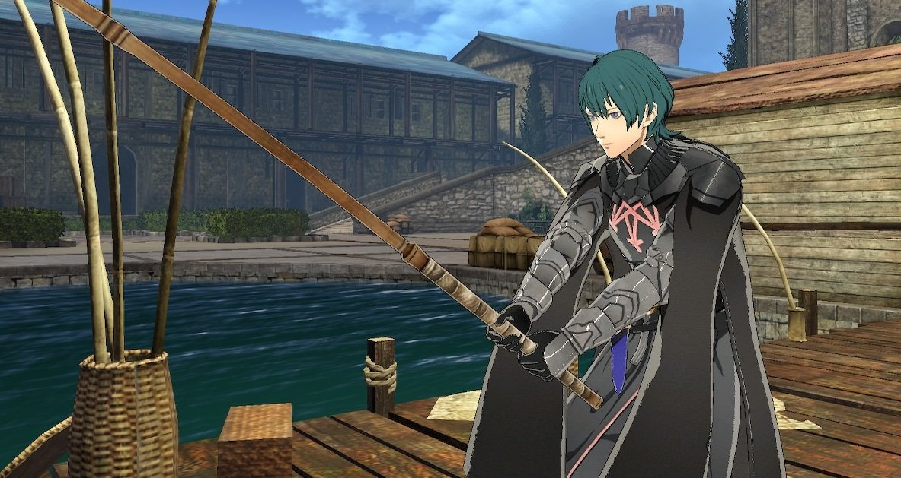
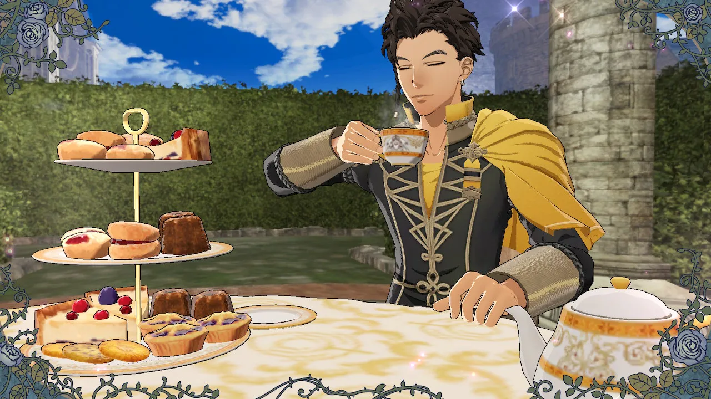

How Fire Emblem: Three Houses works as a game.
Fire Emblem: Three House is a strategic turn-based JRPG where you command all of your units to fight, in some ways similar to how you would play chess. Your units can earn XP (Experience Points) when they attack or defend in battles, and when your units level up, their different stats have a chance of increasing by one or a few points higher (Stat level ups are random, but each character has certain stats that will be more or less likely to increase). When your units reach a certain level and meet the weapon proficiency criteria, you can change your units class to a stronger class, giving them new skills and stat bonuses. The game also gives you a lot of different weapon choices for your units, but you need to know when it is the right time to use a rare weapon on the enemy because the game also has a weapon durability system, meaning your weapons can break in battle if the durability count reaches zero.
The other side of Fire Emblem: Three Houses’ gameplay has many social sim elements. When you are not fighting battles, you can still do many things like train your units, garden, eat with your allies, go fishing, and even have tea time with your favourite characters (Many of these activities are optional, and not required to beat the game). By doing these activities, they will increase your resources, and help strengthen your units. You can also increase the bonds you characters have with each other and view their support conversations. When your units have support ranks with each other, they will gain bonus stats or skills when they are close to those allies. At the very end of the game, you can even choose to marry one of the characters in the game (this is totally optional).
